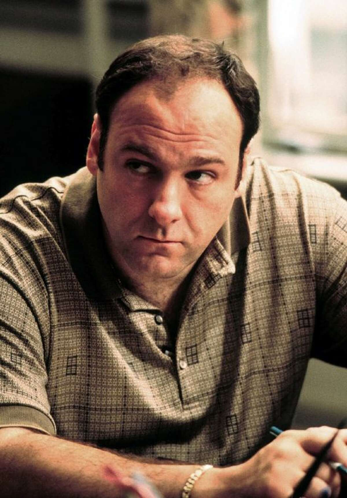
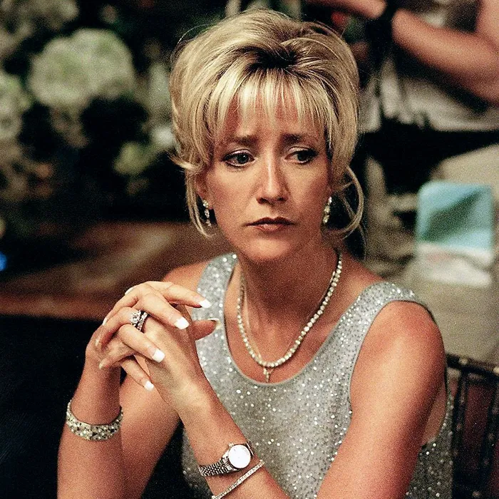
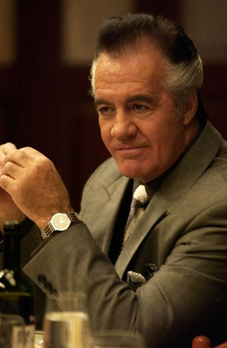
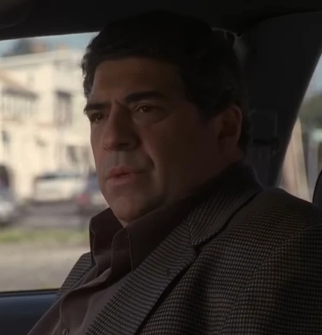

Tony Soprano - Tony jest staroświeckim facetem w głębi serca. Ma tendencję do romantyzowania swojej pracy i wszystkich kodeksów honorowych i stowarzyszeń kulturowych, które są jej częścią. Krótko mówiąc, Tony'ego interesuje szacunek: „Ci, którzy chcą być traktowani z szacunkiem, okazują szacunek”.

Carmela Soprano - lojalna, zadziorna i miła. Carmela naprawdę kocha Tony'ego i ich dzieci, mimo że nieustannie ją frustrują. Wydaje się, że nic nie może sprostać oczekiwaniom Carmeli. Życie nie jest bajką, jaką sobie wyobrażała.

Christopher Moltisanti - niedojrzały, nieodpowiedzialny i kapryśny. Różne uzależnienia Chrisa często przeszkadzają w jego przedsięwzięciach biznesowych, co nie sprzyja mu w oczach jego szefa i mentora, Tony'ego Soprano. Tony jest w zasadzie rodziną, ale nawet jego pobłażanie ekscesom Chrisa może mieć swoje granice.

Paulie Gualtieri - Facet, który opowiada kiepskie dowcipy w nieodpowiednich momentach, Paulie może czasami maskować swoją morderczą naturę. Lubi myśleć, że jest wyluzowany, ale może wpaść w szał przy najmniejszej prowokacji lub nieporozumieniu.

Sal Bonpensiero - Salvatore Bonpensiero zaczynał jako koci włamywacz i był czule nazywany „Big Pussy” ze względu na wczesną karierę. Prowadził również warsztat blacharski ze swoim bratem Edwardem Bonpensiero. Ożenił się z Angie Bonpensiero w 1976 roku. Był współpracownikiem DiMeo capo „Johnny Boy” Soprano, którego wspierał podczas zamieszek w 1983 roku.